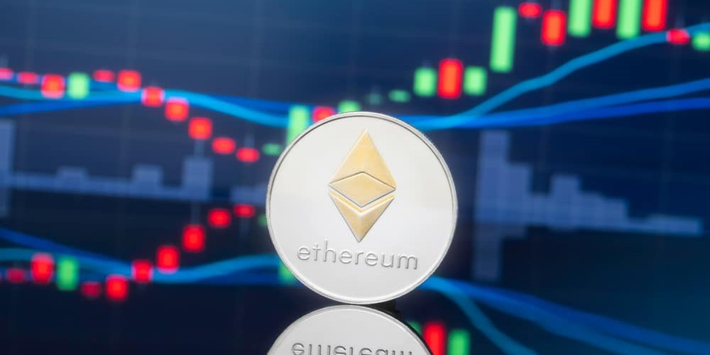
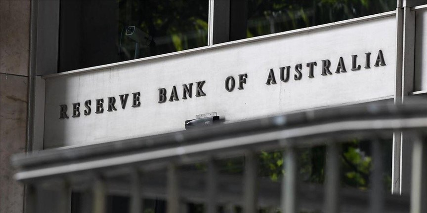
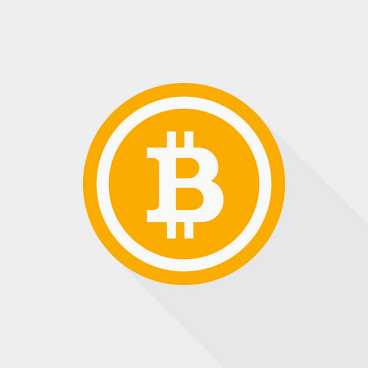

Harga Bitcoin Mencapai Rekor Tertinggi dalam Sejarah, Menguatkan Stabilitas Pasar Kripto
Tanjungpinang, Okt 25, 2023
Bitcoin, mata uang kripto terbesar di dunia, mencapai rekor tertinggi sepanjang masa dengan harga mencapai $100,000 per koin. Kenaikan ini menciptakan gelombang kepercayaan dan optimisme di pasar cryptocurrency setelah sejumlah fluktuasi yang signifikan dalam beberapa bulan terakhir.
Peningkatan harga Bitcoin sejalan dengan tren positif dalam aset digital lainnya, termasuk Ethereum dan beberapa altcoin populer. Para analis percaya bahwa faktor-faktor seperti adopsi lembaga keuangan besar dan peningkatan minat investor ritel telah memberikan dorongan besar pada kenaikan harga tersebut.
Meskipun kenaikan harga ini menggembirakan bagi pemegang Bitcoin, beberapa ahli juga mengingatkan akan volatilitas yang terkait dengan cryptocurrency. Oleh karena itu, investasi dalam cryptocurrency tetap memerlukan pemahaman yang mendalam dan manajemen risiko yang bijak.
Sementara itu, perhatian terus bertambah terhadap perkembangan teknologi blockchain, yang merupakan dasar dari cryptocurrency. Inovasi dalam teknologi ini akan terus memengaruhi berbagai sektor ekonomi dan memperluas potensi penggunaan cryptocurrency di masa depan.
Ethereum 2.0 Siap Meluncurkan Fasa Pertama Upgrade Shard
Tanjungpinang, Okt 24, 2023
Ethereum, salah satu mata uang kripto terbesar di dunia, bersiap untuk meluncurkan fasa pertama dari upgrade jaringan Ethereum 2.0 yang sangat dinantikan. Tahap pertama ini akan memperkenalkan konsep "shard chains" yang akan meningkatkan kapasitas dan efisiensi jaringan.
Shard chains adalah bagian dari upaya Ethereum untuk meningkatkan skalabilitas jaringan, memungkinkan lebih banyak transaksi untuk diproses dengan cepat dan lebih efisien. Ini juga diharapkan akan mengurangi biaya transaksi yang tinggi yang telah menjadi masalah di jaringan Ethereum saat ini.
Fasa pertama upgrade ini merupakan langkah pertama dari serangkaian perubahan yang direncanakan untuk jaringan Ethereum. Pengembang dan komunitas cryptocurrency dengan cermat mengamati perkembangan ini karena dianggap sebagai langkah penting dalam masa depan Ethereum sebagai platform blockchain utama.
Ethereum 2.0 diperkirakan akan memainkan peran kunci dalam perkembangan DeFi (Keuangan Terdesentralisasi) dan ekosistem blockchain secara keseluruhan. Ini adalah langkah yang dinantikan oleh komunitas cryptocurrency, dan lebih banyak perubahan diharapkan dalam beberapa bulan mendatang.
Bank Sentral Australia Membahas Potensi Pengembangan Mata Uang Digital Nasional
Tanjungpinang, Okt 23, 2023
Bank Sentral Australia, Reserve Bank of Australia (RBA), telah mengumumkan bahwa mereka sedang menjajaki potensi pengembangan mata uang digital nasional (CBDC), yang akan menjadi mata uang digital yang dikeluarkan dan diawasi oleh bank sentral.
Keputusan ini diambil sebagai respons terhadap pertumbuhan yang pesat dalam penggunaan uang digital, seperti cryptocurrency dan platform pembayaran digital, di Australia. RBA mengakui bahwa CBDC memiliki potensi untuk meningkatkan efisiensi transaksi, memperkuat kebijakan moneter, dan meningkatkan aksesibilitas keuangan bagi warga Australia.
Namun, RBA juga menekankan bahwa perencanaan dan pelaksanaan CBDC akan memerlukan pemikiran yang matang dan pertimbangan mendalam tentang dampak potensialnya terhadap sistem keuangan dan ekonomi Australia. Mereka berencana untuk terus berdiskusi dengan pemangku kepentingan, seperti pemerintah, sektor perbankan, dan masyarakat umum dalam perjalanan menuju pengembangan CBDC.
Keputusan Bank Sentral Australia untuk menjelajahi CBDC menjadi bagian dari tren global di mana bank sentral di berbagai negara sedang mengkaji potensi penerbitan mata uang digital nasional. Ini adalah langkah yang menarik dalam perkembangan cryptocurrency dan teknologi blockchain serta berpotensi membawa dampak signifikan pada ekosistem keuangan Australia.
About Me
Kripto
Revolusi finansial digital, transaksi terenkripsi, dan blockchain mengubah paradigma uang global.
Follow Me